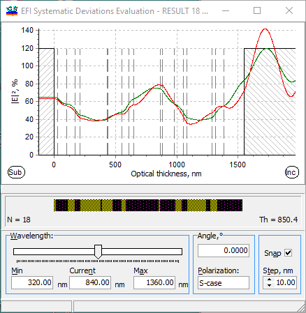

EFI Systematic Evaluation
EFI Systematic Evaluation
Navigation: OptiLayer Menu Commands > Analysis Menu > Systematic Deviations >
EFI Systematic Evaluation
` <color_systematic_deviation_eva.html>`__ ` <idh_menu_analysis.html>`__ ` <integsystev.html>`__
This window opens when the corresponding option is selected in the Systematic Deviations Setup window.

It displays the electric field for the theoretical design and the design with systematic deviations.